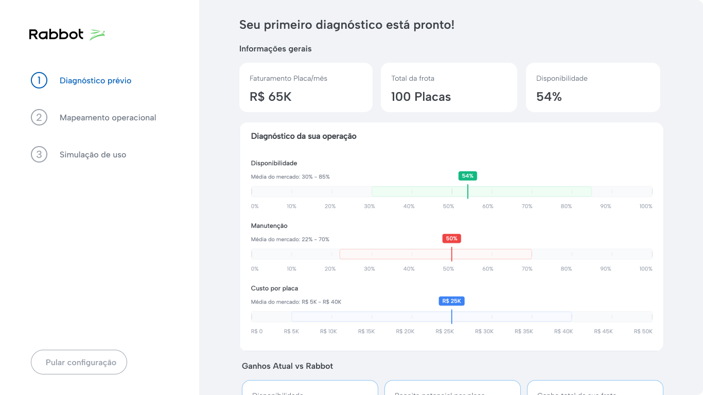
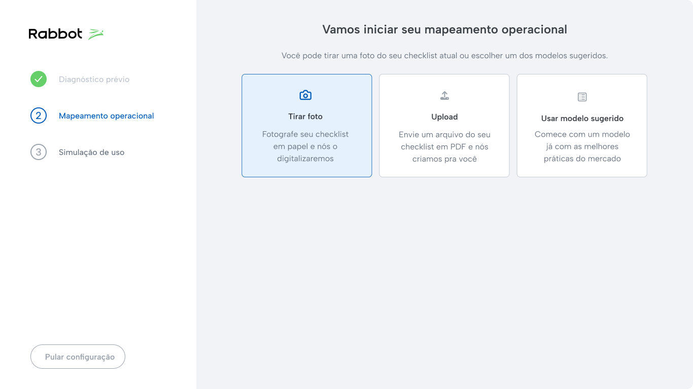
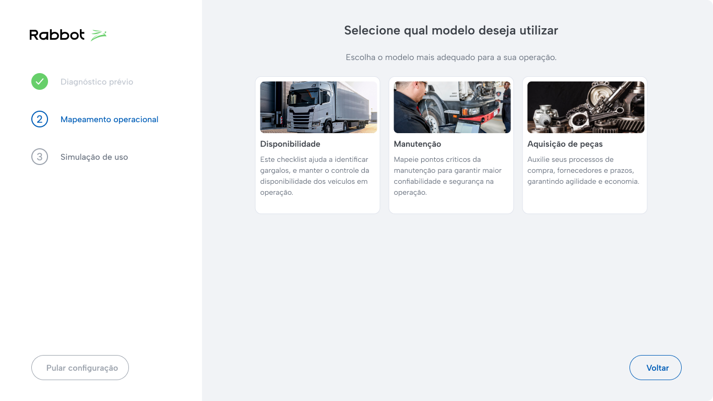
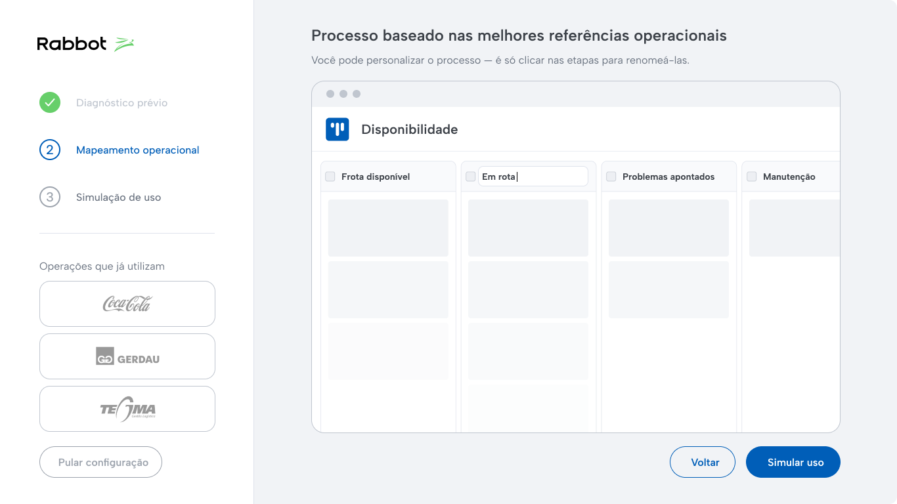
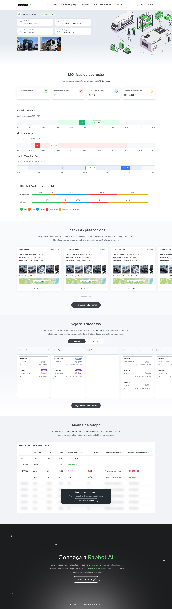

O produto como argumento de venda. Não uma demo. Uma experiência real.
O problema não era o produto. Era que cada vendedor apresentava o produto de um jeito diferente. Os mais antigos improvisavam com base na experiência. Os novos repetiam o que ouviam dos outros. Não existia consistência, nem profundidade técnica. Percebi que não adiantava criar mais material de apoio. O problema era estrutural. Precisávamos transformar o próprio produto no argumento de venda.
Antes de propor qualquer solução, fui a campo. Acompanhei reuniões, observei como os vendedores conduziam o diagnóstico e onde as conversas perdiam força. Ficou claro que o problema não era só de comunicação, mas de processo. Em campo observei dois padrões claros: a dificuldade de aprofundar em features técnicas do produto, e a ausência total de um roteiro estruturado. Cada venda dependia da habilidade individual de quem estava na sala.
Visita a campo: observação do processo comercial
Mapeei a jornada do vendedor e do cliente ao longo das quatro etapas do ciclo comercial, da prospecção ao fechamento, identificando dores, pensamentos e oportunidades em cada momento.
Desenhei um modelo de Product-Led Sales: em vez de explicar o produto, a gente o colocava para funcionar dentro da operação do cliente. A venda deixaria de ser uma apresentação e passaria a ser uma experiência real. O modelo foi estruturado em quatro etapas: diagnóstico estruturado na primeira reunião, configuração automática do ambiente, validação em campo de um dia inteiro (a Blitz) e um relatório final com métricas e ROI.
Criei uma interface guiada para a primeira reunião. O vendedor conduz o diagnóstico em tempo real, coleta dados da operação do cliente e já gera indicadores iniciais. Isso trouxe consistência para algo que antes dependia totalmente de improviso, permitindo que qualquer vendedor, independente da experiência, chegasse preparado. Com base no diagnóstico, a plataforma configurava automaticamente um ambiente pronto para a operação do cliente.
O layout foi desenhado no Figma, com foco em consistência visual e fluxo guiado. Para validar a experiência de forma funcional, exportei o design no Lovable, mantendo o mesmo sistema visual e testando o fluxo com o time de vendas.
Design no Figma
Protótipo funcional no Lovable
Com o fluxo validado, as telas foram construídas etapa por etapa. Cada decisão de interface tinha um objetivo claro: reduzir o improviso e garantir que qualquer vendedor chegasse à reunião preparado, independente do tempo de casa.




Essa é a parte que mais me orgulha. A Blitz é um dia inteiro de uso real do produto dentro da operação do cliente. Não uma demo, não um piloto controlado. O produto funcionando de verdade, sob pressão real. Participei das primeiras Blitz presencialmente. Acompanhei checklists sendo preenchidos, movimentações registradas, tempos capturados. Ao final do dia, a plataforma gerava automaticamente um relatório com os dados da operação: métricas, eficiência, impacto financeiro estimado. A reunião de fechamento deixava de ser uma apresentação comercial e virava uma leitura conjunta dos dados do próprio cliente. Não tem argumento de venda mais forte do que isso.
Acompanhamento presencial da Blitz na operação do cliente

Relatório gerado ao final do dia